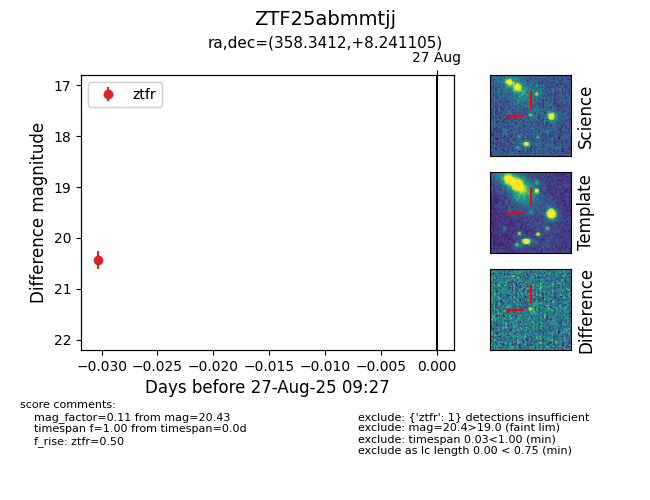

Target ZTF25abmmtjj at 2025-08-27 09:27, see:
FINK: fink-portal.org/ZTF25abmmtjj
Lasair: lasair-ztf.lsst.ac.uk/objects/ZTF25abmmtjj
ALeRCE: alerce.online/object/ZTF25abmmtjj
alt names
ZTF25abmmtjj (ztf,fink)
coordinates:
equatorial (ra, dec) = (358.3412,+8.24110)
galactic (l, b) = (99.2038,-51.93499)
photometry
last ztfr=20.43
1 ztfr detections
